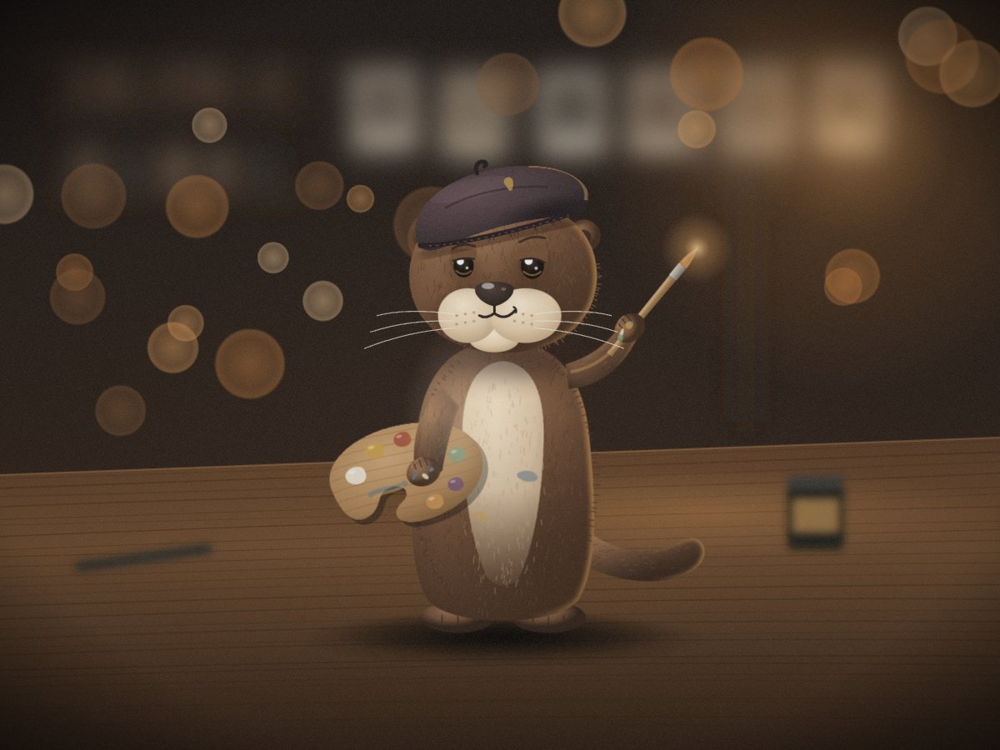
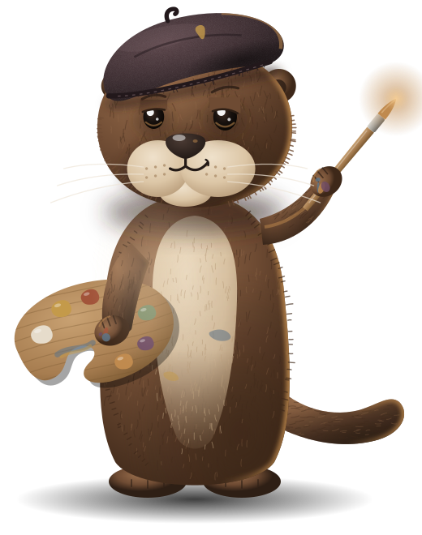
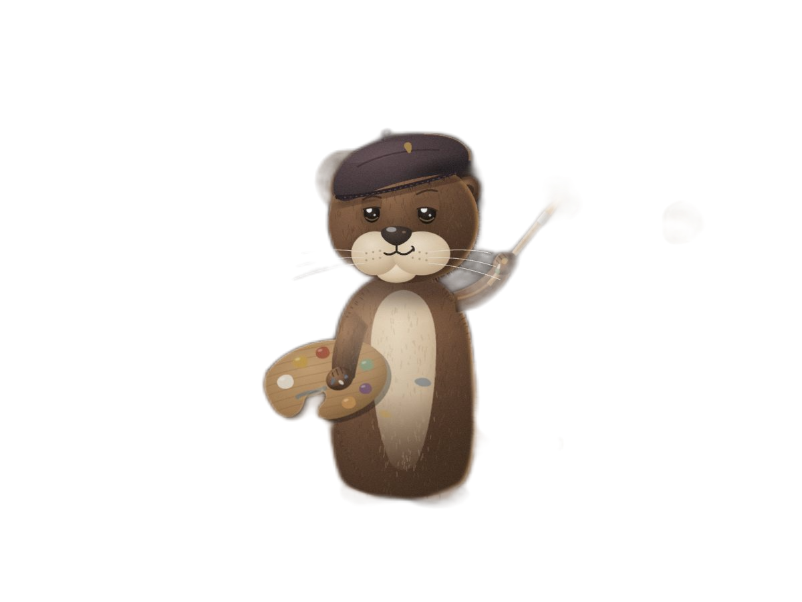
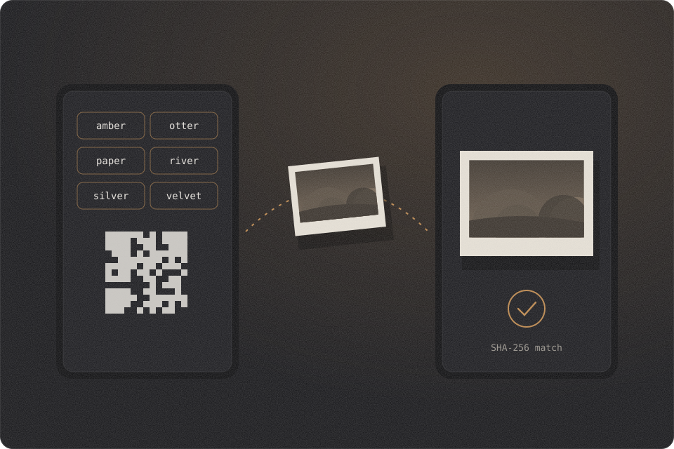
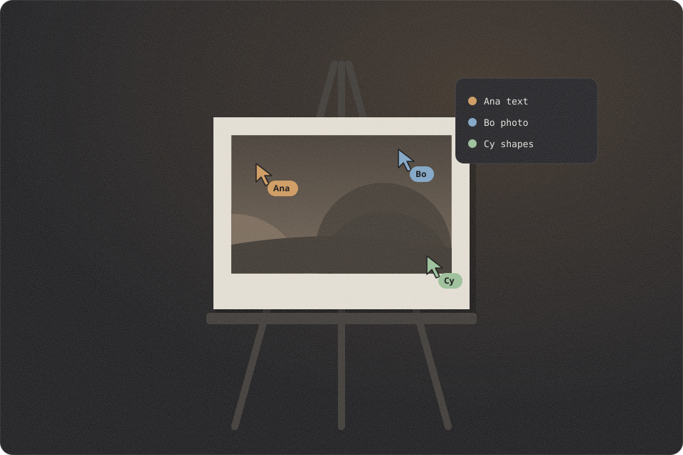

Frame 01 / under the enlarger
Develop your photos in the browser.
A layered photo editor that works offline on your own device, with selections, filters, PSD and TIFF files. Invite friends with six words and edit together while you talk. Nothing is uploaded.


Contact sheet / 9 frames
Everything a darkroom had. Plus layers.
A workspace with a menu bar, an options bar, a tool strip, docked panels and document tabs, and a Quick mode for one tap edits.
Layers and masks
Groups, blend modes, opacity, layer masks, clipping, adjustment and fill layers, layer styles.
12ASelections
Marquee, lasso, polygon lasso, magic wand and quick select, with feather, expand, contract and channels as selections.
13ATools
Brush, eraser, clone, heal, dodge and burn, gradient, text, shapes, pen, crop and free transform.
14AFilters, levels and curves
A filter library with blur, sharpen, noise, distort and stylize groups, liquify and content aware fill.
15AReal files
Layered PSD in and out, TIFF, PNG, JPEG, WebP, AVIF where the browser can, GIF, BMP and the .pxo project.
16ASoft proof for print
An approximate CMYK preview, a gamut warning and CMYK TIFF export, from a generic press model.
17AHistory
Unlimited undo with a history panel, autosave in this browser and recovery after a crash.
18ARemove background
An open license model runs on your device, with a refine brush and feathered edges.
19AEdit together
Up to five friends on one document, with live cursors, per layer locks and view or edit roles.
20A
Frame 21A / a clean cut
Lift the subject off the table.
Drag the line to compare. The cutout runs in your browser and leaves a mask you can paint on.

Frame 22A / passing a print
Three ways in. The same six words.
Open a room and your friends join from any device. No account, no server of ours, nothing to install.
Six words
Read them out or paste them anywhere. The first four letters of each are enough.
amberotterpaperriversilvervelvetA QR code
A phone camera opens the room straight away.
A link with a Copy button
The words ride after the # sign, which browsers never send to any server.
app/#join=amber-otter-paper-river-silver-velvet

Frame 23A / the whole crew
Talk while you edit.
Everyone in the room gets the same tools, straight between browsers and encrypted by WebRTC.

Chat
Replies, reactions and pasted pictures.
Voice with noise suppression
The browser cleanup plus our own filter for fans, keys and hum. Mute any time.
Camera
Turn it on or off, and pick the microphone, camera and speaker you want.
Screen share
Show a reference or another window to the room.
Safety words
Each connection shows six words on both screens. When they match, nobody sits in the middle.
Fine print
Honest limits.
- Printing colors are an approximation: the CMYK preview and CMYK TIFF come from a generic coated press model, with no ICC color engine.
- PSD files open with their layers, masks and blend modes. Smart objects, vector shapes and live type from other apps open as pixels.
- AVIF and WebP export depend on the browser. The app tells you when it cannot encode a format.
- The cutout model and its runtime download once, about 16 MB, then work offline.
- A room holds up to five friends. Voice and video run in a full mesh, so many cameras at once need a good connection.
- Peer to peer can fail on very strict networks. You can add your own TURN server in Settings. Screen sharing needs a desktop browser.